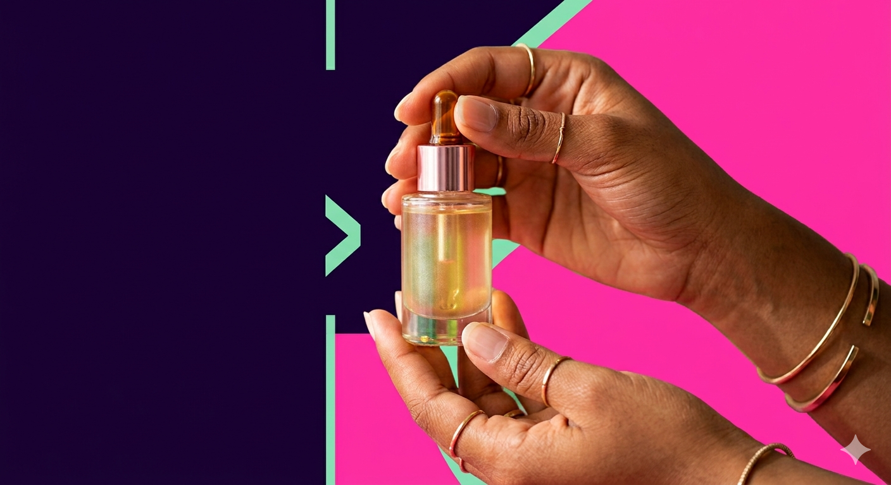

A gente não veio pra ser mais do mesmo.
Como tudo começou
A Glow Republic nasceu em 2021, num apartamento de 40m² em São Paulo. Camila Rocha, então com 26 anos, trabalhava com marketing de beleza e vivia frustrada: os produtos que funcionavam tinham fórmulas cheias de ingredientes que ela não queria usar. Os que tinham fórmulas limpas, não entregavam resultado.
Com R$8.000 de economia e muita pesquisa, ela desenvolveu o primeiro produto da marca: o Glow Burst Serum. Postou no Instagram sem muita expectativa. Em 48h, tinha esgotado o estoque.
Hoje, a Glow Republic tem mais de 80 mil clientes, 6 produtos na linha e uma missão que não mudou: skincare que funciona, que respeita o planeta e que cabe na vida real.

Glow em números
Clientes
Produtos
Vegano
Avaliação média
Quem faz a Glow acontecer
Camila Rocha
Fundadora & CEOObcecada por fórmula e por ouvir cliente.
Bia Ferreira
Head de Produto10 anos de cosmética. Não lança nada que não testou na própria pele.
Leo Matos
Design & MarcaResponsável por tudo que você vê. E por algumas coisas que você sente.